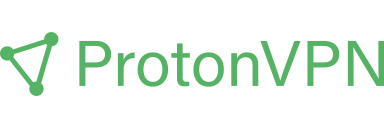

VPN Services
Find a no-logging VPN operator who isn’t out to sell or read your web traffic.
VPNs do not provide anonymity
Using a VPN will not keep your browsing habits anonymous, nor will it add additional security to non-secure (HTTP) traffic.
If you are looking for anonymity, you should use the Tor Browser instead of a VPN.
If you're looking for added security, you should always ensure you're connecting to websites using HTTPS. A VPN is not a replacement for good security practices.
When are VPNs useful?
If you're looking for additional privacy from your ISP, on a public Wi-Fi network, or while torrenting files, a VPN may be the solution for you as long as you understand the risks involved.
Recommended Providers¶
Criteria
Our recommended providers are outside the US, use encryption, accept Monero, support WireGuard & OpenVPN, and have a no logging policy. Read our full list of criteria for more information.
Mullvad¶
Recommendation


Mullvad is a fast and inexpensive VPN with a serious focus on transparency and security. They have been in operation since 2009. Mullvad is based in Sweden and does not have a free trial.
EUR €60/year
38 Countries
Mullvad has servers in 38 countries (1). Picking a VPN provider with a server nearest to you will reduce latency of the network traffic you send. This is because of a shorter route (less hops) to the destination.
We also think it's better for the security of the VPN provider's private keys if they use dedicated servers, instead of cheaper shared solutions (with other customers) such as virtual private servers.
- As of 2022/05/17
Independently Audited
Mullvad's VPN clients have been audited by Cure53 and Assured AB in a pentest report published at cure53.de. The security researchers concluded:
Cure53 and Assured AB are happy with the results of the audit and the software leaves an overall positive impression. With security dedication of the in-house team at the Mullvad VPN compound, the testers have no doubts about the project being on the right track from a security standpoint.
In 2020 a second audit was announced and the final audit report was made available on Cure53's website:
The results of this May-June 2020 project targeting the Mullvad complex are quite positive. [...] The overall application ecosystem used by Mullvad leaves a sound and structured impression. The overall structure of the application makes it easy to roll out patches and fixes in a structured manner. More than anything, the findings spotted by Cure53 showcase the importance of constantly auditing and re-assessing the current leak vectors, in order to always ensure privacy of the end-users. With that being said, Mullvad does a great job protecting the end-user from common PII leaks and privacy related risks.
In 2021 an infrastructure audit was announced and the final audit report was made available on Cure53's website.
Open Source Clients
Mullvad provides the source code for their desktop and mobile clients in their GitHub organization.
Accepts Cash and Monero
Mullvad, in addition to accepting credit/debit cards and PayPal, accepts Bitcoin, Bitcoin Cash, Monero and cash/local currency as anonymous forms of payment. They also accept Swish and bank wire transfers.
WireGuard Support
Mullvad supports the WireGuard® protocol. WireGuard is a newer protocol that utilizes state-of-the-art cryptography. Additionally, WireGuard aims to be simpler and more performant.
Mullvad recommends the use of WireGuard with their service. It is the default or only protocol on Mullvad's Android, iOS, macOS, and Linux apps, but on Windows you have to manually enable WireGuard. Mullvad also offers a WireGuard configuration generator for use with the official WireGuard apps.
IPv6 Support
Mullvad supports the future of networking IPv6. Their network allows you to access services hosted on IPv6 as opposed to other providers who block IPv6 connections.
Remote Port Forwarding
Remote port forwarding is allowed for people who make one-time payments, but not allowed for accounts with a recurring/subscription-based payment method. This is to prevent Mullvad from being able to identify you based on your port usage and stored subscription information. See Port forwarding with Mullvad VPN for more information.
Mobile Clients
Mullvad has published App Store and Google Play clients, both supporting an easy-to use interface as opposed to requiring you to manually configure your WireGuard connection. The mobile client on Android is also available in F-Droid, which ensures that it is compiled with reproducible builds.
Additional Functionality
Mullvad is very transparent about which nodes they own or rent. They use ShadowSocks in their ShadowSocks + OpenVPN configuration, making them more resistant against firewalls with Deep Packet Inspection trying to block VPNs. Supposedly, China has to use a different method to block ShadowSocks servers. Mullvad's website is also accessible via Tor at o54hon2e2vj6c7m3aqqu6uyece65by3vgoxxhlqlsvkmacw6a7m7kiad.onion.
ProtonVPN¶
Recommendation

ProtonVPN is a strong contender in the VPN space, and they have been in operation since 2016. ProtonVPN is based in Switzerland and offers a limited free pricing tier, as well as premium options. They offer a further 14% discount for buying a 2 year subscription.
Free - Basic Plan USD $48/year - Plus Plan USD $96/year
63 Countries
ProtonVPN has servers in 63 countries (1). Picking a VPN provider with a server nearest to you will reduce latency of the network traffic you send. This is because of a shorter route (less hops) to the destination.
We also think it's better for the security of the VPN provider's private keys if they use dedicated servers, instead of cheaper shared solutions (with other customers) such as virtual private servers.
- As of 2022/05/17
Independently Audited
As of January 2020 ProtonVPN has undergone an independent audit by SEC Consult. SEC Consult found some medium and low risk vulnerabilities in ProtonVPN's Windows, Android, and iOS applications, all of which were "properly fixed" by ProtonVPN before the reports were published. None of the issues identified would have provided an attacker remote access to your device or traffic. You can view individual reports for each platform at protonvpn.com.
Open Source Clients
ProtonVPN provides the source code for their desktop and mobile clients in their GitHub organization.
Accepts Cash
ProtonVPN, in addition to accepting credit/debit cards and PayPal, accepts Bitcoin, and cash/local currency as anonymous forms of payment.
WireGuard Support
ProtonVPN mostly supports the WireGuard® protocol. WireGuard is a newer protocol that utilizes state-of-the-art cryptography. Additionally, WireGuard aims to be simpler and more performant.
ProtonVPN recommends the use of WireGuard with their service. On ProtonVPN's Windows, macOS, iOS, Android, ChromeOS, and Android TV apps, WireGuard is the default protocol; however, support for the protocol is not present in their Linux app.
Remote Port Forwarding
ProtonVPN currently only supports remote port forwarding on Windows, which may impact some applications. Especially Peer-to-Peer applications like Torrent clients.
Mobile Clients
In addition to providing standard OpenVPN configuration files, ProtonVPN has mobile clients for App Store and Google Play allowing for easy connections to their servers. The mobile client on Android is also available in F-Droid, which ensures that it is compiled with reproducible builds.
Additional Functionality
ProtonVPN have their own servers and datacenters in Switzerland, Iceland and Sweden. They offer adblocking and known malware domains blocking with their DNS service. Additionally, ProtonVPN also offers "Tor" servers allowing you to easily connect to onion sites, but we still strongly recommend using the official Tor Browser for this purpose.
IVPN¶
Recommendation
IVPN is another premium VPN provider, and they have been in operation since 2009. IVPN is based in Gibraltar.
Standard USD $60/year - Pro USD $100/year
32 Countries
IVPN has servers in 32 countries (1). Picking a VPN provider with a server nearest to you will reduce latency of the network traffic you send. This is because of a shorter route (less hops) to the destination.
We also think it's better for the security of the VPN provider's private keys if they use dedicated servers, instead of cheaper shared solutions (with other customers) such as virtual private servers.
- As of 2022/05/17
Independently Audited
IVPN has undergone a no-logging audit from Cure53 which concluded in agreement with IVPN's no-logging claim. IVPN has also completed a comprehensive pentest report Cure53 in January 2020. IVPN has also said they plan to have annual reports in the future.
Open Source Clients
As of Feburary 2020 IVPN applications are now open source. Source code can be obtained from their GitHub organization.
Accepts Cash and Monero
In addition to accepting credit/debit cards and PayPal, IVPN accepts Bitcoin, Monero and cash/local currency (on annual plans) as anonymous forms of payment.
WireGuard Support
IVPN supports the WireGuard® protocol. WireGuard is a newer protocol that utilizes state-of-the-art cryptography. Additionally, WireGuard aims to be simpler and more performant.
IVPN recommends the use of WireGuard with their service and, as such, the protocol is the default on all of IVPN's apps. IVPN also offers a WireGuard configuration generator for use with the official WireGuard apps.
Remote Port Forwarding
Remote port forwarding is possible with a Pro plan. Port forwarding can be activated via the client area. Port forwarding is only available on IVPN when using WireGuard or OpenVPN protocols and is disabled on US servers.
Mobile Clients
In addition to providing standard OpenVPN configuration files, IVPN has mobile clients for App Store and Google Play allowing for easy connections to their servers. The mobile client on Android is also available in F-Droid, which ensures that it is compiled with reproducible builds.
Additional Functionality
IVPN clients support two factor authentication (Mullvad and ProtonVPN clients do not). IVPN also provides "AntiTracker" functionality, which blocks advertising networks and trackers from the network level.
Our Criteria¶
Danger
It is important to note that using a VPN provider will not make you anonymous, but it will give you better privacy in certain situations. A VPN is not a tool for illegal activities. Don't rely on a "no log" policy.
Please note we are not affiliated with any of the providers we recommend. This allows us to provide completely objective recommendations. We have developed a clear set of requirements for any VPN provider wishing to be recommended, including strong encryption, independent security audits, modern technology, and more. We suggest you familiarize yourself with this list before choosing a VPN provider, and conduct your own research to ensure the VPN provider you choose is as trustworthy as possible.
Jurisdiction¶
Operating outside the five/nine/fourteen-eyes countries is not a guarantee of privacy necessarily, and there are other factors to consider. However, we believe that avoiding these countries is important if you wish to avoid mass government dragnet surveillance, especially from the United States.
Minimum to Qualify:
- Operating outside the USA or other Five Eyes countries.
Best Case:
- Operating outside the USA or other Fourteen Eyes countries.
- Operating inside a country with strong consumer protection laws.
Technology¶
We require all our recommended VPN providers to provide OpenVPN configuration files to be used in any client. If a VPN provides their own custom client, we require a killswitch to block network data leaks when disconnected.
Minimum to Qualify:
- Support for strong protocols such as WireGuard & OpenVPN.
- Killswitch built in to clients.
- Multihop support. Multihopping is important to keep data private in case of a single node compromise.
- If VPN clients are provided, they should be open source, like the VPN software they generally have built into them. We believe that source code availability provides greater transparency about what your device is actually doing. We like to see these applications available in F-Droid.
Best Case:
- WireGuard and OpenVPN support.
- Killswitch with highly configurable options (enable/disable on certain networks, on boot, etc.)
- Easy-to-use VPN clients
- Supports IPv6. We expect that servers will allow incoming connections via IPv6 and allow you to access services hosted on IPv6 addresses.
- Capability of remote port forwarding assists in creating connections when using P2P (Peer-to-Peer) filesharing software, Freenet, or hosting a server (e.g., Mumble).
Privacy¶
We prefer our recommended providers to collect as little data as possible. Not collecting personal information on registration, and accepting anonymous forms of payment are required.
Minimum to Qualify:
- Monero or cash payment option.
- No personal information required to register: Only username, password, and email at most.
Best Case:
- Accepts Monero, cash, and other forms of anonymous payment options (gift cards, etc.)
- No personal information accepted (autogenerated username, no email required, etc.)
Security¶
A VPN is pointless if it can't even provide adequate security. We require all our recommended providers to abide by current security standards for their OpenVPN connections. Ideally, they would use more future-proof encryption schemes by default. We also require an independent third-party to audit the provider's security, ideally in a very comprehensive manner and on a repeated (yearly) basis.
Minimum to Qualify:
- Strong Encryption Schemes: OpenVPN with SHA-256 authentication; RSA-2048 or better handshake; AES-256-GCM or AES-256-CBC data encryption.
- Perfect Forward Secrecy (PFS).
- Published security audits from a reputable third-party firm.
Best Case:
- Strongest Encryption: RSA-4096.
- Perfect Forward Secrecy (PFS).
- Comprehensive published security audits from a reputable third-party firm.
- Bug-bounty programs and/or a coordinated vulnerability-disclosure process.
Trust¶
You wouldn't trust your finances to someone with a fake identity, so why trust them with your internet data? We require our recommended providers to be public about their ownership or leadership. We also would like to see frequent transparency reports, especially in regard to how government requests are handled.
Minimum to Qualify:
- Public-facing leadership or ownership.
Best Case:
- Public-facing leadership.
- Frequent transparency reports.
Marketing¶
With the VPN providers we recommend we like to see responsible marketing.
Minimum to Qualify:
- Must self host analytics (no Google Analytics etc). The provider's site must also comply with DNT (Do Not Track) for people who want to opt-out.
Must not have any marketing which is irresponsible:
- Making guarantees of protecting anonymity 100%. When someone makes a claim that something is 100% it means there is no certainty for failure. We know people can quite easily deanonymize themselves in a number of ways, eg:
- Reusing personal information eg. (email accounts, unique pseudonyms etc) that they accessed without anonymity software (Tor, VPN etc)
- Browser fingerprinting
- Claim that a single circuit VPN is "more anonymous" than Tor, which is a circuit of 3 or more hops that regularly changes.
- Use responsible language, eg it is okay to say that a VPN is "disconnected" or "not connected", however claiming that someone is "exposed", "vulnerable" or "compromised" is needless use of alarming language that may be incorrect. For example, that person might simply be on another VPN provider's service or using Tor.
Best Case:
Responsible marketing that is both educational and useful to the consumer could include:
- An accurate comparison to when Tor or other self-contained networks should be used.
- Availability of the VPN provider's website over a .onion Hidden Service
Additional Functionality¶
While not strictly requirements, there are some factors we looked into when determining which providers to recommend. These include adblocking/tracker-blocking functionality, warrant canaries, multihop connections, excellent customer support, the number of allowed simultaneous connections, etc.
VPN Overview¶
Should I use a VPN?¶
Yes, unless you are already using Tor. A VPN does 2 things: shifting the risks from your Internet Service Provider to itself and hiding your IP from a third party service.
VPNs cannot encrypt data outside of the connection between your device and the VPN server. VPN providers can see and modify your traffic the same way your ISP could. And there is no way to verify a VPN provider's "no logging" policies in any way.
However, they do hide your actual IP from a third party service, provided that there are no IP leaks. They help you blend in with others and mitigate IP based tracking.
What about encryption?¶
Encryption offered by VPN providers are between your devices and their servers. It guarantees that this specific link is secure. This is a step up from using unencrypted proxies where an adversary on the network can intercept the communications between your devices and said proxies and modify them. However, encryption between your apps or browsers with the service providers are not handled by this encryption.
In order to keep what you actually do on the websites you visit private and secure, you must use HTTPS. This will keep your passwords, session tokens, and queries safe from the VPN provider. Consider enabling "HTTPS everywhere" in your browser to mitigate downgrade attacks like SSL Strip.
Should I use encrypted DNS with a VPN?¶
Unless your VPN provider hosts the encrypted DNS servers, no. Using DOH/DOT (or any other form of encrypted DNS) with third party servers will simply add more entities to trust, and does absolutely nothing to improve your privacy/security. Your VPN provider can still see which websites you visit based on the IP addresses and other methods. Instead of just trusting your VPN provider, you are now trusting both the VPN provider and the DNS provider.
A common reason to recommend encrypted DNS is that it helps against DNS spoofing. However, your browser should already be checking for TLS certificates with HTTPS and warn you about it. If you are not using HTTPS, then an adversary can still just modify anything other than your DNS queries and the end result will be little different.
Needless to say, you shouldn't use encrypted DNS with Tor. This would direct all of your DNS requests through a single circuit, and would allow the encrypted DNS provider to deanonymize you.
Should I use Tor and a VPN?¶
By using a VPN with Tor, you're creating essentially a permanent entry node, often with a money trail attached. This provides zero additional benefit to you, while increasing the attack surface of your connection dramatically. If you wish to hide your Tor usage from your ISP or your government, Tor has a built-in solution for that: Tor bridges. Read more about Tor bridges and why using a VPN is not necessary.
What if I need anonymity?¶
VPNs cannot provide anonymity. Your VPN provider will still see your real IP address, and often has a money trail that can be linked directly back to you. You cannot rely on "no logging" policies to protect your data. Use Tor instead.
What about VPN providers that provides Tor nodes?¶
Do not use that feature. The point of using Tor is that you do not trust your VPN provider. Currently Tor only supports the TCP protocol. UDP (used in WebRTC for voice and video sharing, the new http3/QUIC protocol, etc), ICMP and other packets will be dropped. To compensate for this, VPN providers typically will route all non TCP packets through their VPN server (your first hop). This is the case with ProtonVPN. Additionally, when using this Tor over VPN setup, you do not have control over other important Tor features such as Isolated Destination Address (using a different Tor circuit for every domain you visit).
Thus, this feature should be viewed as a convenient way to access the Tor Network, not to stay annonymous. For true anonimity, use the Tor Browser Bundle, TorSocks, or a Tor gateway.
When are VPNs useful?¶
A VPN may still be useful to you in a variety of scenarios, such as:
- Hiding your traffic from only your Internet Service Provider.
- Hiding your downloads (such as torrents) from your ISP and anti-piracy organizations.
- Hiding your IP from third party websites and services, preventing IP based tracking.
For use cases like these, or if you have another compelling reason, the VPN providers we listed above are who we think are the most trustworthy. However, using a VPN provider still means you're trusting the provider. In pretty much any other scenario you should be using a secure-by-design tool such as Tor.
Sources and Further Reading¶
- VPN - a Very Precarious Narrative by Dennis Schubert
- The self-contained networks recommended by Privacy Guides are able to replace a VPN that allows access to services on local area network
- Slicing Onions: Part 1 – Myth-busting Tor by blacklight447
- Slicing Onions: Part 2 – Onion recipes; VPN not required by blacklight447
- IVPN Privacy Guides
- "Do I need a VPN?", a tool developed by IVPN to challenge aggressive VPN marketing by helping individuals decide if a VPN is right for them.
Related VPN information¶
- The Trouble with VPN and Privacy Review Sites
- Proxy.sh VPN Provider Sniffed Server Traffic to Catch Hacker
- blackVPN announced to delete connection logs after disconnection
- Don't use LT2P IPSec, use other protocols.
- Free VPN App Investigation
- Hidden VPN owners unveiled: 101 VPN products run by just 23 companies
- This Chinese company is secretly behind 24 popular apps seeking dangerous permissions
VPN Related breaches - why external auditing is important¶
- "Zero logs" VPN exposes millions of logs including user passwords, claims data is anonymous July 2020
- NordVPN HTTP POST bug exposed customer information, no authentication required March 2020
- Row erupts over who to blame after NordVPN says: One of our servers was hacked via remote management tool October 2019
- VPN servers seized by Ukrainian authorities weren't encrypted and allowed authorities to impersonate Windscribe servers and capture and decrypt traffic passing through them July 2021